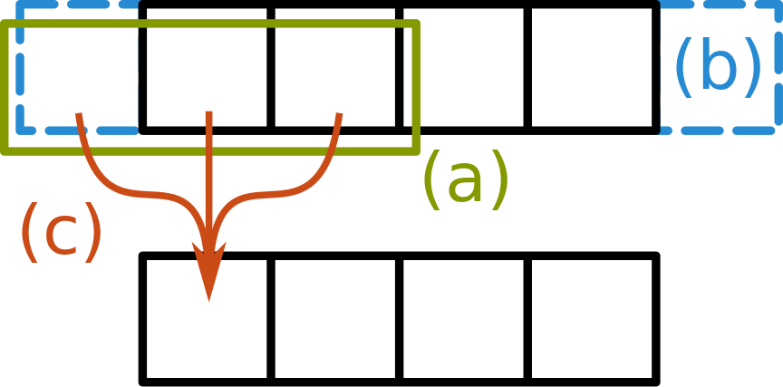
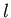

<div id="main">
    <div class="container">
        <div class="row">

            <!-- Content -->
            <div id="content" class="8u skel-cell-important">
                <section>
                    <header>
                        <h2>Abstract</h2>
                    </header>
                    <p>
                        Stencil computations are used in a wide range of applications from physical simulations to
                        machine-learning. Although they have been studied for several decades, optimizing and tuning
                        them for different hardware remains challenging for most programmers.</p>

                    <p>
                        Domain Specific Languages (DSLs) have shown that it is possible to raise the programming
                        abstraction and offer good performance at the same time.
                        However, these approaches require DSL writers to write an almost full-fledged compiler and
                        optimizer.
                        Current DSL compilers are often written from scratch with none or little reuse between different
                        ones.
                        The <span class="lift-bold">Lift</span> project has recently emerged as a new approach to
                        achieving
                        <i>performance portability</i>.
                        <span class="lift-bold">Lift</span> is based on a small set of reusable parallel primitives
                        targeted by DSLs or library writers.
                        <span class="lift-bold">Lift</span>'s key novelty is its encoding of optimization as rewrite
                        rules which are used to explore the optimization space.
                        This approach is easily extensible and requires very little effort from compiler writers to
                        support other domains.
                        However, <span class="lift-bold">Lift</span> has mostly focused on linear algebra operations and
                        it remains to be seen whether this approach achieves performance portability across domains.</p>

                    <p>
                        We propose to put this to the test and extend <span class="lift-bold">Lift</span> with support
                        for stencil computations.
                        By leveraging the existing <span class="lift-bold">Lift</span> primitives and optimization, we
                        only add a small number of primitives together with a few rewrite rules.
                        Performance results on several stencil applications show that this approach leads to high
                        performance on different GPUs.</p>

                </section>

                <section>
                    <header>
                        <h2>The Lift Project</h2>
                    </header>
                    <div align="center">
                        <br>
                        <strong>Figure 1</strong>: Compilation Process of <span class="lift-bold">Lift</span>
                    </div>
                    <br>
                    <p>
                        <span class="lift-bold">Lift</span> provides high-level functional <i>primitives</i>,
                        as shown on the left-hand side, which serve as the building blocks used by the programmer.
                        Applications are expressed by composing and nesting these primitives which are well-known
                        operations in functional programming, such as <i>map</i> and <SPAN
                            CLASS="textit">reduce</SPAN>.
                        Using a functional approach enables expressing multidimensional stencil computations by
                        composing and nesting intuitive primitives.
                        Furthermore, systematically transforming programs using semantics-preserving rewrite rules
                        allows correctness to be proved with simple equational reasoning.</p>

                    <p>
                        <span class="lift-bold">Lift</span> achieves performance portability by formalizing both
                        algorithmic and device specific optimizations as a sequence of rewrite rules.
                        An automatic exploration process, shown in the middle of Figure 1, applies these
                        optimization rules to find the best performing implementation for each device [SRD16].
                        Crucially, <span class="lift-bold">Lift</span> offers a clear separation of concerns between
                        <i>what</i> should be computed and <i>how</i> it
                        should be implemented.
                        High-level expressions specifying <i>what</i> to compute are automatically
                        rewritten into low-level expressions which specify <i>how</i> to compute
                        it.
                        This is the key idea for achieving performance portability in <span
                            class="lift-bold">Lift</span>.
                        The low-level expressions are still functional in nature but encode specific aspects of the
                        OpenCL programming model such as OpenCL's thread or memory hierarchy.</p>

                    <p>
                        Finally, the <span class="lift-bold">Lift</span> tool-chain produces high performance OpenCL
                        code, as shown on the right-hand side.
                        Our compiler infers types, performs memory allocation, and computes indices into arrays which
                        are implicit in the functional notation [SRD17].</p>
                </section>
                <section>
                    <header>
                        <h2>Extending Lift for Stencil Computations</h2>
                    </header>
                    <p>
                        Stencil computations are a class of algorithms which update elements in a multidimensional grid
                        based on neighboring values using a fixed pattern - the stencil.
                        They are used extensively in various domains such as medical imaging, fluid simulations,
                        numerical
                        methods or machine-learning.
                        In general, stencil computations consist of three fundamental parts as shown in Figure 2:
                        (a) for every element of the input, a <i>neighborhood</i> is accessed specified
                        by the shape of the stencil;
                        (b) <i>boundary handling</i> is performed which specifies how to handle
                        neighboring values for elements at the borders of the input grid;
                        (c) finally, <i>for each</i> neighborhood their elements are used to compute an
                        output element.</p>
                    
                    <table>
                        <tr>
                            <td width="45%" align="center">
                                
                                <br>
                                <strong>Figure 2:</strong>
                                3-Point Stencil
                            </td>
                            <td width="55%" align="center" style="vertical-align: bottom">
                                
                            </td>
                        </tr>
                    </table>

                    <p>
                        The most relevant high-level primitives in <span class="lift-bold">Lift</span> are
                        <i><strong>map</strong></i>,
                        <i><strong>reduce</strong></i>,
                        <i><strong>zip</strong></i>,
                        <i><strong>iterate</strong></i>,
                        <i><strong>split</strong></i>, and
                        <i><strong>join</strong></i>, whose types are defined
                        in [SFLD15].
                        It is not possible to express stencil computations in <span class="lift-bold">Lift</span> using
                        solely the primitives.
                        These primitives are too restrictive in terms of data accesses such that it is not possible to
                        express accessing neighborhoods of elements which is mandatory for stencil computations.
                        Instead of expressing stencil computations using a single high-level <i>stencil</i>
                        primitive, as often seen in other high-level approaches
                        , in <span class="lift-bold">Lift</span>, we aim for composability and, therefore, express
                        stencil computations using smaller intuitive building blocks.
                        We add new primitives to perform the first two steps.
                        Following the original design goal of <span class="lift-bold">Lift</span>, each primitive
                        expresses a single algorithmic concept and more complex functionality is achieved by
                        composition.</p>

                    <p>
                        <strong>Boundary handling with <i>pad</i></strong>&nbsp;
                        The new <i>pad</i> primitive adds  and  elements at the beginning and end of the input array  respectively.
                        There are two variations of <i>pad</i> which either re-indexes into the
                        input array, or appends a user-specified value.</p>

                    <p>
                        The <i><strong>pad</strong></i> primitive for reindexing has the
                        following type:</p>
                    <div align="center" class="mathdisplay">
                        </div>
                    <p>
                        It uses the index function  to map indices from the range  into the smaller range of the input array
                        .
                        The elements added at the boundaries are, therefore, elements of the input array and the index
                        function is used to determine which element this will be.
                        For instance, by defining the following function: <strong>clamp(i, n) = (i &lt; 0) ? 0 : ((i
                        &gt;= n) ?
                        n-1 : i)</strong>,
                        it is possible to express a clamping boundary condition.
                        The <i>pad</i> primitive for appending values has a similar type and can be
                        used to implement constant boundary conditions.</p>

                    <p>
                        <strong>Creating neighborhoods with <i>slide</i></strong>&nbsp;
                        The <i>slide</i> primitive applies a sliding window of length  which progresses  number of elements.
                        To create a one-dimensional three-point stencil we write:
                        .
                        This creates a nested array where each element of the outer array is itself an array of three
                        elements.
                        The type of <i>slide</i> is defined as follows:</p>
                    <div align="center" class="mathdisplay">
                        
                    </div>

                    <p>
                        <strong>Computing the stencil for each neighborhood with <i>map</i></strong>&nbsp;
                        The <i>map</i> primitive is the principle and only way in <span
                            class="lift-bold">Lift</span> to exploit data parallelism.
                        As stencils are naturally data parallel we express the last step of the stencil computation
                        using the <i>map</i> primitive.
                        This step takes a neighborhood as its input and performs the stencil computation to produce a
                        single output value for each neighborhood.
                        Listing 1 shows a simple 3-Point Jacobi Stencil expressed in <span
                            class="lift-bold">Lift</span>.
                        We can clearly see the decomposition in three logical steps.
                        The stencil computation performed on each neighborhood is specified as the function
                        <strong>sumNbh</strong> in line 1.
                    </p>
                    <p>
                        One of the crucial ideas of <span class="lift-bold">Lift</span> is to express complex
                        computations as
                        compositions of simple and easy to understand one-dimensional primitives.
                        Using nesting and function composition, we are able to express multidimensional stencil
                        computations
                        without introducing specialized primitives for higher dimensions.
                        This keeps the compiler simple as it only generates code for intuitive one dimensional
                        primitives.
                        Furthermore, we are able to hide the complexity of composition and nesting behind high-level,
                        domain-specific functions.</p>

                </section>
                <section>
                    <header>
                        <h2>Expressing Stencil Optimizations as Rewrite Rules</h2>
                    </header>
                    <p>
                        On GPUs the fast, but small local memory can be used as a cache to store a set of neighborhoods
                        where
                        their elements are loaded only once from the slow global memory and successive accesses are made
                        from
                        the local memory.
                        Traditionally, locality is exploited using overlapped tiling [GBFP09].
                        The input grid is divided into tiles, which overlap at the edges to allow every grid element to
                        access
                        its neighboring elements.
                        The size of the overlap is determined by the size of the neighborhood.</p>

                    <p>
                        We reuse the <i>slide</i> primitive to represent overlapping tiles.
                        By phrasing tiling as a rewrite rule this optimization is made accessible to <span
                            class="lift-bold">Lift</span>'s
                        automatic exploration process.
                        Tiling in one dimension is expressible using the following rewrite rule:</p>
                    <div align="center">
                        
                    </div>

                    <p>
                        As with the primitives, the optimization rules for tiling higher dimensional stencil are
                        expressed
                        reusing the one-dimensional primitives.</p>

                </section>
                <section>
                    <header>
                        <h2>Evaluation</h2>
                    </header>

                    <div align="center">
                        <br>
                        <strong>Figure 3</strong>: Performance of the Lift generated code and hand-optimized kernels expressed as Giga-elements updated per second. 
                    </div>
                    <div align="center">
                        <br>
                        <strong>Figure 4</strong>: Performance of Lift-generated kernels compared to PPCG-generated kernels. Both approaches auto-tune the kernels
for up to three hours per benchmark/input/device. Large input sizes did not fit onto the ARM GPU. 
                    </div>

                    <br>
                    <p>
                    The transformation from high-level programs to OpenCL code is performed automatically by applying
                    rewrite
                    rules to explore optimizations such as the overlapped tiling, usage of local memory, or
                    loop-unrolling.
                    By exploring different optimization choices on different devices, <span
                        class="lift-bold">Lift</span>
                    achieves performance portability.
                    We tune numerical parameters such as tile sizes and explore this search space to find the best
                    performing
                    kernel for each stencil applications.
                    The results presented in Figure 3 show the performance of Lift generated code with hand-optimized reference implementations.
                    Figure 4 shows the performance of Lift generated kernels compared to state-of-the-art polyhedral compilation.
                </section>
                <section>
                    <header>
                        <h2>References</h2>
                    </header>

                    <strong>[GBFP09]</strong>
                    Jia Guo, Ganesh Bikshandi, Basilio B Fraguela, and David Padua.
                    Writing productive stencil codes with overlapped tiling.
                    <em>Concurrency and Computation: Pract. Exper.</em>, 21, 2009.
                    <br>
                    <strong>[SFLD15]</strong>

                    Michel Steuwer, Christian Fensch, Sam Lindley, and Christophe Dubach.
                    Generating performance portable code using rewrite rules.
                    In <em>ICFP</em>, pages 205-217. ACM, 2015.
                    <br>
                    <strong>[SRD16]</strong>

                    Michel Steuwer, Toomas Remmelg, and Christophe Dubach.
                    Matrix multiplication beyond auto-tuning: rewrite-based GPU code
                    generation.
                    In <em>CASES</em>, pages 15:1-15:10. ACM, 2016.
                    <br>
                    <strong>[SRD17]</strong>

                    Michel Steuwer, Toomas Remmelg, and Christophe Dubach.
                    Lift: a functional data-parallel IR for high-performance GPU code
                    generation.
                    In <em>CGO</em>, pages 74-85. ACM, 2017.
                </section>

                <section>
                    <header>
                        <h2>Publications</h2>
                    </header>
                    <ul>
                        <li>
                            Bastian Hagedorn: <strong><a href="publications/2016/hagedorn16masterthesis.pdf">
                            An Extension of a Functional Intermediate Language for Parallelizing
                            Stencil Computations and its Optimizing GPU Implementation using OpenCL</a></strong>;
                            <i>Master Thesis</i>; University of Münster, Germany; Supervised by Sergei Gorlatch and
                            Michel Steuwer.
                        </li>
                    </ul>
                </section>

            </div>

            <!-- Sidebar -->
            <div id="sidebar" class="4u">
                <section style="text-align: center">
                    <header style="text-align: left">
                        <h2>Posters</h2>
                    </header>
                    <div class="thumb_frame" style="margin: 0 auto;">
                        <a href="posters/2017/HagedornPUMPS2017Poster.pdf">
                            <div class="thumb_container">
                                
                                <div class="thumb_overlay">
                                    <div class="thumb_text">
                                        <p class="posted">Jun 28, 2017</p>
                                        <br>
                                        <p class="posted">@ the PUMPS Summer School 2017 in the Barcelona Supercomputing
                                            Center (BSC), Spain</p>
                                        <br>
                                        <p>Performance Portable Stencil Code Generation</p>
                                    </div>
                                </div>
                            </div>
                        </a>
                    </div>
                </section>
                <section>
                    <header>
                        <h2>Talks</h2>
                    </header>
                    <section>
                        <ul class="style">
                            <li>
                                <p class="posted">Mar 21, 2017 @ the Compiler and Architecture Design Group</p>
                                <p><a href="presentations/2017/CArD-2017.pdf">
                                    Performance Portable Stencil Code Generation in LIFT</a></p>
                            </li>
                        </ul>
                    </section>
                </section>
                <section class="profile">
                    <header>
                        <h2>Researchers</h2>
                    </header>
                    <div class="row">
                        <section class="6u">
                            <a href="https://www.wwu.de/PVS/en/mitarbeiter/hagedorn.html" class="image full">
                                </a>
                            Bastian Hagedorn
                            <br>
                            PhD Student
                            <br>
                            University of M&uuml;nster
                        </section>
                        <section class="6u">
                            <a href="http://homepages.inf.ed.ac.uk/s1147290/index.html" class="image full">
                                </a>
                            Larisa Stoltzfus
                            <br>
                            PhD Student
                            <br>
                            University of Edinburgh
                        </section>
                    </div>
                    <div class="row">
                        <section class="6u">
                            <a href="https://michel-steuwer.github.io/" class="image full">
                                </a>
                            Michel Steuwer
                            <br>
                            Lecturer
                            <br>
                            University of Glasgow
                        </section>
                        <section class="6u">
                            <a href="http://homepages.inf.ed.ac.uk/cdubach/" class="image full">
                                </a>
                            Christophe Dubach
                            <br>
                            Reader
                            <br>
                            University of Edinburgh
                        </section>
                    </div>
                </section>
            </div>

        </div>
    </div>
</div>
